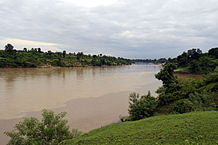
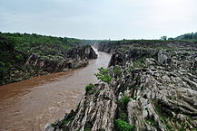
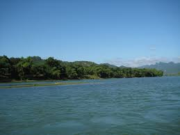
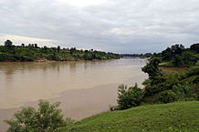
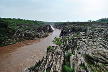
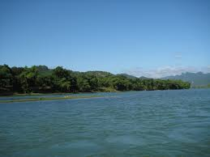

The Narmada is the longest river in Madhya Pradesh. It flows westward through a rift valley, with the Vindhya ranges sprawling along its northern bank and the Satpura range of mountains along the southern. Its tributaries include the Banjar, the Tawa, the Machna, the Shakkar, the Denwa and the Sonbhardra rivers. The Tapti River runs parallel to Narmada, and also flows through a rift valley. The Narmada�Tapti systems carry and enormous volume of water and provide drainage for almost a quarter of the land area of Madhya Pradesh. The Vindhyas form the southern boundary of the Ganges basin, with the western part of the Ganges basin draining into the Yamuna and the eastern part directly into the Ganges itself. All the rivers, which drain into the Ganges, flow from south to north, with the Chambal, Shipra, Kali Sindh, Parbati, Kuno, Sind, Betwa, Dhasan and Ken rivers being the main tributaries of the Yamuna. Shipra River is one of the most sacred rivers of Hinduism. It is the site of the Kumbh Mela, which is held every 12 years. The land drained by these rivers is agriculturally rich, with the natural vegetation largely consisting of grass and dry deciduous forest types, largely thorny. The eastern part of the Ganges basin consists of the Son, the Tons and the Rihand Rivers. Son, which arises in the Maikal hills around Amarkantak, is the largest tributary that goes into the Ganges on the south bank and that does not arise from the Himalayas. Son and its tributaries contribute the bulk of the monsoon flow into the Ganges, because the north bank tributaries are all snow fed. The forests in their basins are much richer than the thorn forests of the northwestern part of Madhya Pradesh. After the formation of Chhattisgarh State, the major portion of Mahanadi basin now lies in Chhattisgarh. Presently, only 154 km sq basin area of Hasdeo River in Anuppur District lies in Madhya Pradesh. The Satpuras, in the Gawilgarh and Mahadeo Hills, also contain a watershed, which is south facing. The Wainganga, the Wardha, the Pench, the Kanhan and Penganga rivers, discharge an enormous volume of water into the Godavari river system. The Godavari basin consists of sub-tropical, semi-moist forests, mainly in the valley of the Indrawati. There are many important multi-state irrigation projects in development, including the Godavari River Basin Irrigation Projects.